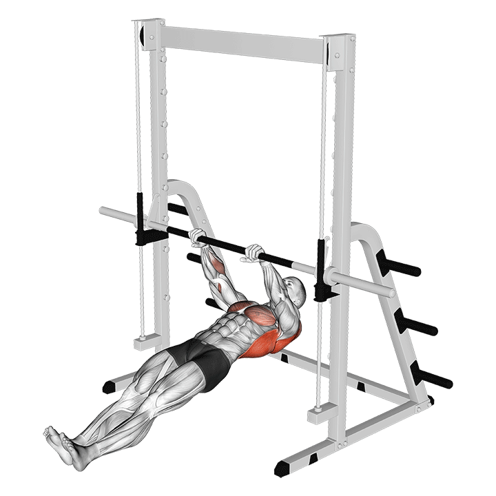
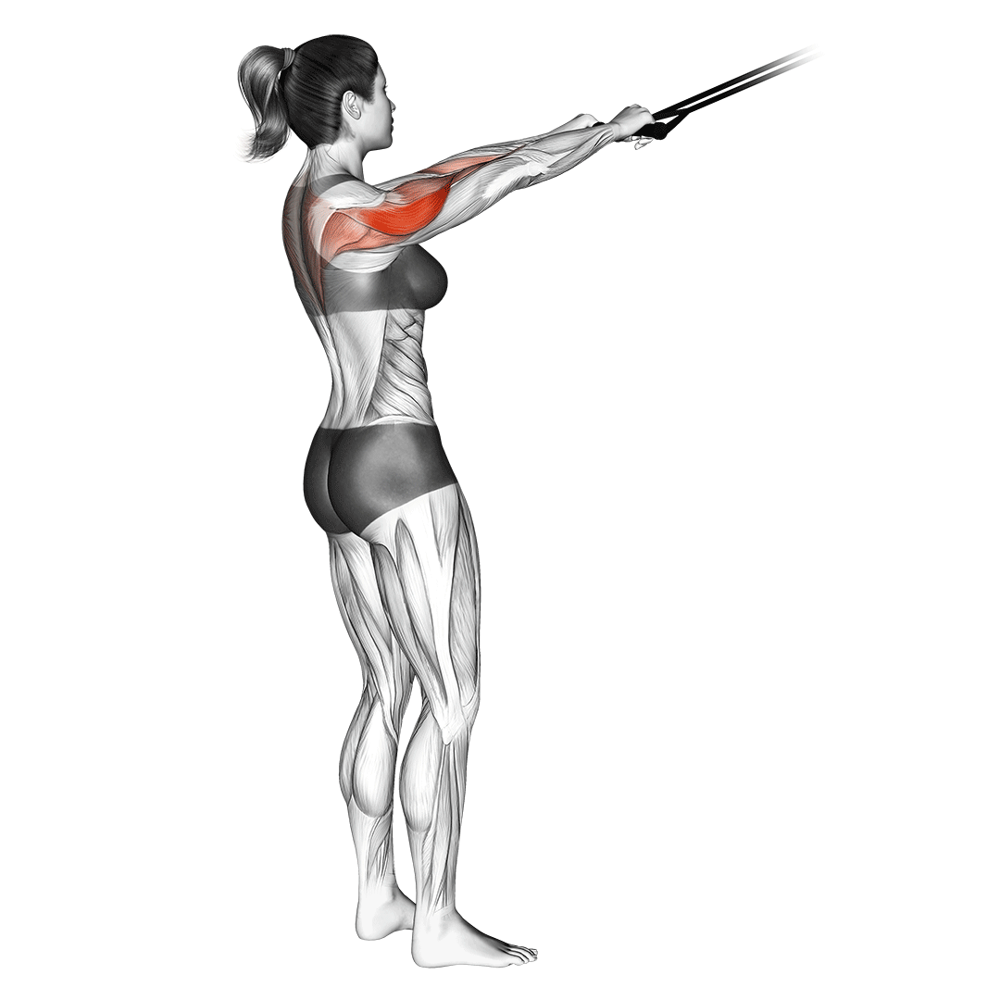

Pull-Ups
Builds width and overall back strength.
3 sets
8–12 reps
Bodyweight or add weight
Lat Pulldown
Targets the lats, mimics pull-ups with adjustable weight.
4 sets
12, 10, 8, 6 reps
Progressive overload

Bent-Over Rows
Thickens mid-back and builds pulling strength.
4 sets
8–10 reps
Barbell or Dumbbell
Deadlifts
King of back exercises, works full posterior chain.
3–4 sets
5–8 reps
Focus on heavy weight & form

Single-Arm Dumbbell Row
Focuses on lats and traps unilaterally.
3 sets
10–12 reps each arm
Use bench for support
Seated Cable Row
Adds thickness and engages the mid-back.
3 sets
10–12 reps
Squeeze lats at contraction

T-Bar Row
Heavy compound row for dense mid-back.
3 sets
8–10 reps
Strict form, heavy load

Inverted Rows
Bodyweight exercise that builds pulling endurance.
3 sets
10–15 reps
Adjust bar height for difficulty

Chin-Ups
Underhand grip, hits lats and biceps.
3 sets
8–12 reps
Can add weight if strong

Face Pulls
Targets rear delts, traps, and upper back posture.
3 sets
12–15 reps
Focus on control and squeeze